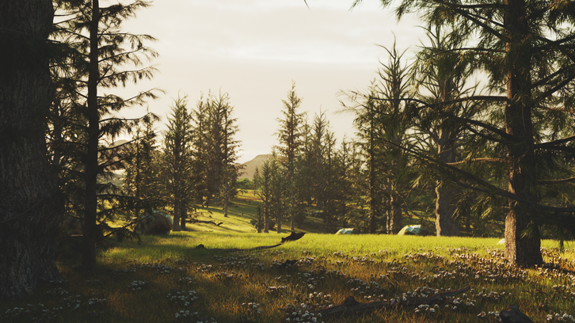
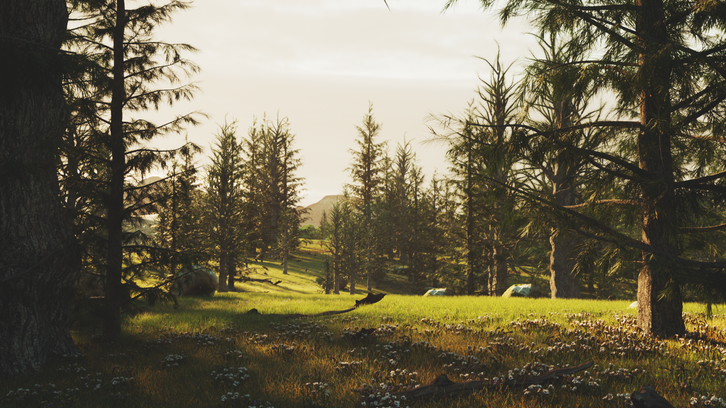

Epilogue
Breakdown
당시 작업중에 RND를 했던 방법입니다.
일단 현재 작업중인걸 렌더해보고 에펙에서 계속 돌려보며 마음에 안드는부분, 문제가 있는부분들을 계속 체크합니다.
혹은 인스타그램이나 비핸스를 둘러보면서 쉬면서 작품보는 눈을 높히고 난 뒤, 다시 에펙 RND작업으로 되돌아가서
제작품을 보며 RND를 반복합니다.
그래서 아래의 사진들이 만들어졌습니다!
 
